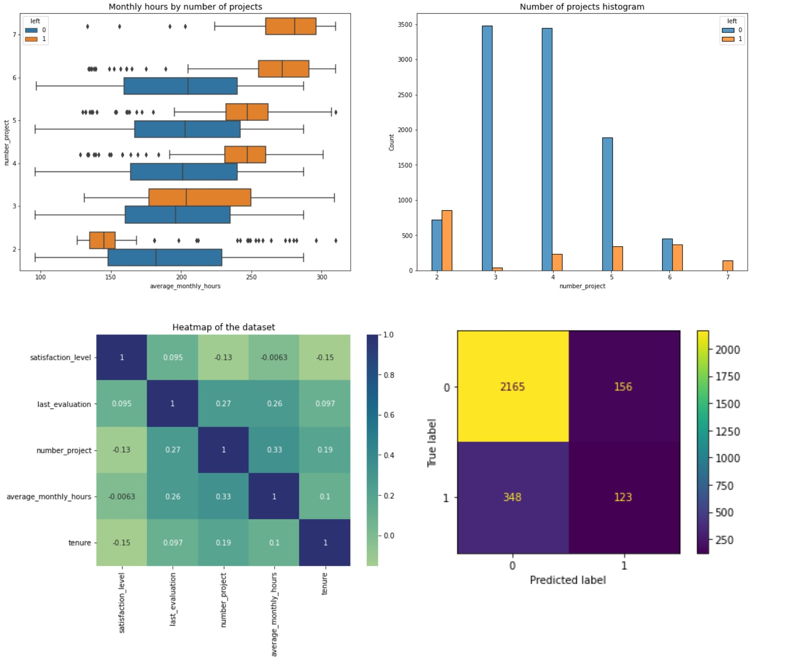
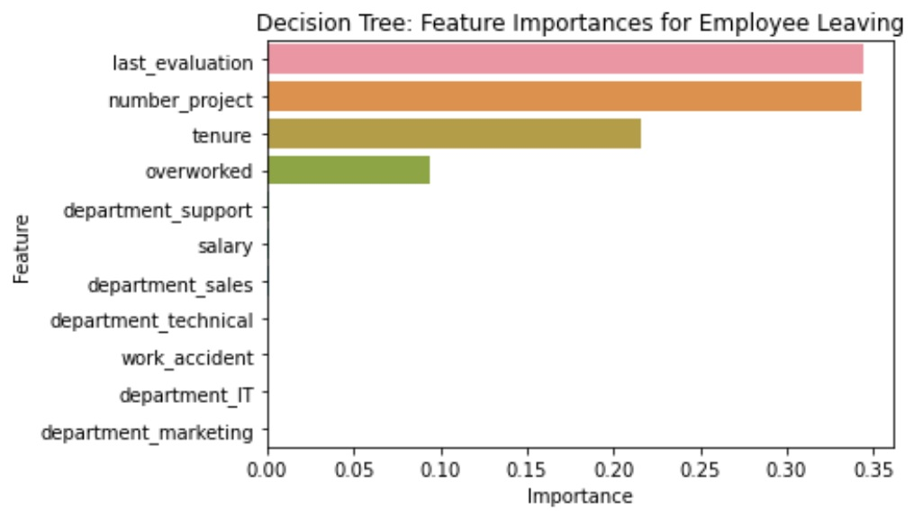

Project 2:
Google Advanced Data Analytics Capstone
Salifort Motors seeks to improve employee retention and answer the following question: What’s likely to make the employee leave the company?
RESPONSE:
Since the variable we are seeking to predict is categorical, the team could build either a logistic regression or a tree-based machine learning model. The random forest model slightly outperforms the decision tree model.
IMPACT:
This model helps predict whether an employee will leave and identify which factors are most influential. These insights can help HR make decisions to improve employee retention.
ISSUE/PROBLEM:
Barplot above shows the most relevant variables: ‘last_evaluation’, ‘number_project’, ‘tenure’ and ‘overworked’.

In the random forest model above, `last_evaluation`, `tenure`, `number_project`, `overworked`, `salary_low`, and `work_accident` have the highest importance. These variables are most helpful in predicting the outcome variable, `left`.
INSIGHTS/NEXT STEPS
- Cap the number of projects that employees can work on.
- Consider promoting employees who have been with the company for at least four years, or conduct further investigation about why four-year tenured employees are so dissatisfied.
- Either reward employees for working longer hours, or don't require them to do so.
- If employees aren't familiar with the company's overtime pay policies, inform them about this. If the expectations around workload and time off aren't explicit, make them clear.
- Hold company-wide and within-team discussions to understand and address the company work culture, across the board and in specific contexts.
- High evaluation scores should not be reserved for employees who work 200+ hours per month. Consider a proportionate scale for rewarding employees who contribute more/put in more effort.
- © Untitled
- Design: HTML5 UP